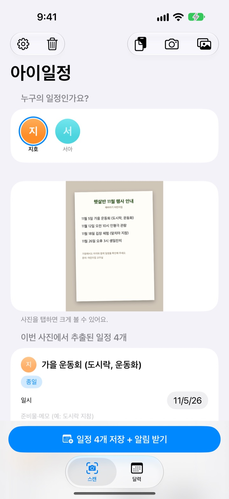
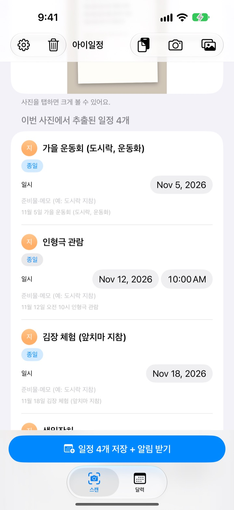
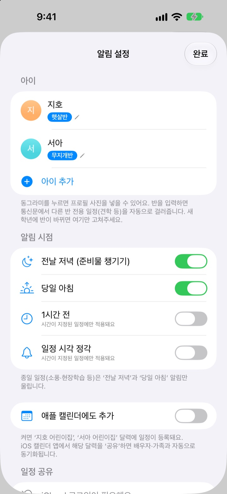
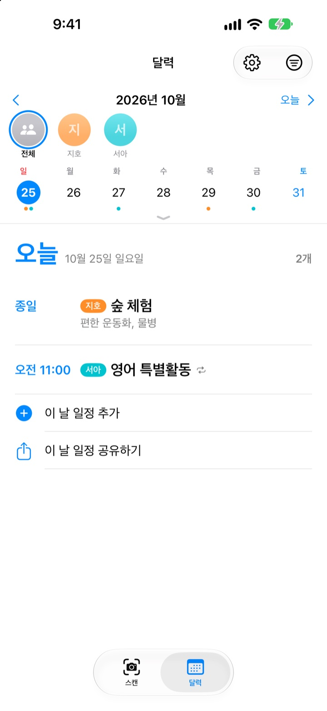

통신문은 찍기만 하세요
준비물은 전날 알려요
어린이집에서 받은 한 달 일정표를 사진으로 찍으면 날짜, 시간, 행사 이름을 읽어 달력에 한 번에 넣어요. 소풍 전날 저녁 8시에는 도시락 챙기라는 알림이 와요.
모든 기능이 무료예요. 사진은 기기 밖으로 나가지 않아요.

통신문을 찍어 보세요
다음 달 행사 안내문 예시예요. 찍으면 앱처럼 일정과 준비물을 뽑아내고, 고른 시점에 맞춰 알림을 예약해요.
가방 속 통신문, 달력에 옮겨 적고 계신가요?
한 달에 행사가 대여섯 개, 그때마다 도시락, 체육복, 앞치마처럼 챙길 것도 달라요. 냉장고에 붙여 둔 일정표는 정작 출근길에는 보이지 않고, 생각나는 건 늘 당일 아침이에요. 아이일정은 그 종이 한 장을 달력과 알림으로 바꿔요.
사진 한 장으로 한 달 일정
월간 달력, 가정통신문, 단건 안내문 어떤 모양이든 찍거나 앨범에서 고르면 날짜, 시간, 행사 이름을 읽어 와요. 어린이집에서 온 문자를 붙여 넣어도 돼요. 내일, 이번 주 금요일 같은 말도 날짜로 바꿔요.
저장 전에 제목, 날짜, 준비물 메모를 바로 고치고, 필요 없는 일정은 밀어서 지워요. 아이 반을 입력해 두면 다른 반 전용 일정은 알아서 걸러요.

준비물은 전날 저녁에 알려 줘요
알림은 전날 저녁 8시, 당일 아침 7시 30분, 1시간 전, 정각 중에서 골라요. 준비물 메모가 알림에 함께 떠서 가방 싸는 걸 잊지 않아요.
애플 캘린더에도 넣으면 아이 이름으로 된 전용 달력에 들어가고, 이미 넣은 일정은 두 번 넣지 않아요.

아이가 여럿이어도, 가족이 함께여도
아이마다 색으로 나눠 보고, 전체 보기와 아이별 보기를 오가요. 지난 기록을 보고 새 통신문이 어느 아이 것인지 짐작해 줘요.
초대 링크를 보내면 배우자, 조부모, 돌봄 선생님이 같은 일정을 보고 고칠 수 있어요. 홈 화면 위젯으로 다가오는 일정을 바로 확인해요.

시작은 세 단계면 돼요
- 1
아이를 등록해요
이름과 반을 넣어요. 프로필 사진은 원할 때 넣으면 돼요.
- 2
통신문을 찍어요
글씨가 선명하게 나오게 정면에서 찍으면 더 잘 읽어요.
- 3
확인하고 저장해요
알림을 허용하면 고른 시점에 준비물 알림이 와요.
알림은 언제 오나요
- 전날 저녁 8시
- 준비물 챙기기. 기본으로 켜져 있어요
- 당일 아침 7시 30분
- 오늘 일정 알림. 기본으로 켜져 있어요
- 1시간 전
- 시간이 정해진 일정에만 울려요
- 일정 시각 정각
- 시간이 정해진 일정에만 울려요
소풍, 현장학습 같은 종일 일정은 전날 저녁과 당일 아침 알림만 울려요. 설정에서 언제든 켜고 끌 수 있어요.
모든 기능이 무료예요
무료
- 사진과 문자로 일정 읽기
- 저장 전 고치기, 다른 반 일정 거르기
- 전날 저녁, 당일 아침, 1시간 전, 정각 알림
- 아이별 색과 통합 달력
- 애플 캘린더 연동
- 초대 링크로 가족과 함께 보기
- 홈 화면 위젯
개발자 응원하기
- 설정에서 원하는 만큼 작은 팁을 보낼 수 있어요
- 팁은 기능을 열지 않아요. 보내지 않아도 똑같이 써요
광고도, 구독도 없어요.
자주 묻는 질문
어떤 사진을 찍을 수 있나요?
월간 달력(격자형), 가정통신문(문장형 안내), 단건 안내문이나 전단지를 읽을 수 있어요. 글씨가 선명하게 나오도록 정면에서 찍으면 더 잘 읽고, 여러 장을 한 번에 골라 스캔할 수도 있어요.
일정이 몇 개 빠졌거나 제목에 오타가 있어요.
손글씨나 흐린 글씨는 읽기 어려울 수 있어요. 추출된 목록에서 제목, 날짜, 준비물을 바로 고치거나, 필요 없는 일정은 밀어서 지워 주세요. 빠진 일정은 스캔 탭의 일정 직접 추가로 넣고 다시 저장하면 돼요.
알림이 오지 않아요.
설정 > 알림 > 아이일정에서 알림 허용이 켜져 있는지 확인해 주세요. 앱의 설정(⚙️)에서 어떤 시점의 알림을 받을지도 고를 수 있어요.
다른 반 일정까지 들어와요.
설정에서 아이의 반 이름을 넣어 주세요. 통신문에서 다른 반 전용 일정을 알아서 걸러요. 새 학년에 반이 바뀌면 여기만 고치면 돼요.
아이가 여러 명이에요.
설정에서 아이를 여러 명 등록하고 프로필 사진을 넣을 수 있어요. 스캔할 때 누구의 일정인지 고르면 달력에서 아이별 색으로 나뉘고, 통합 보기와 아이별 필터를 오갈 수 있어요.
배우자와 일정을 같이 보고 싶어요.
설정의 일정 공유에서 초대해서 함께 보기를 누르고 초대 링크를 메시지로 보내세요. 받은 사람도 모든 아이와 일정을 보고 고칠 수 있고, 어느 쪽에서 고쳐도 양쪽에 바로 반영돼요. 애플 가족 공유와는 상관없어요. 카카오톡으로 받았다면 링크를 길게 눌러 Safari로 열어 주세요.
다른 방법으로도 공유할 수 있나요?
달력 탭의 공유 버튼으로 아이일정 파일, 캘린더 파일(.ics), 텍스트 요약을 보낼 수 있어요. 애플 캘린더에도 추가를 켜면 아이 이름으로 된 달력이 생기는데, 캘린더 앱에서 이 달력을 iCloud로 공유해도 가족에게 일정이 맞춰져요.
사진이나 일정이 어딘가로 보내지나요?
아니요. 사진 속 글자는 모두 기기 안에서 읽고, 데이터는 기기에만 저장돼요. 일정 공유로 누군가를 초대한 경우에만 일정이 내 iCloud를 거쳐 초대받은 사람과 공유돼요.
문제가 있거나 바라는 기능이 있으면 leeo@kakao.com로 보내 주세요. 보통 2~3일 안에 답장드려요. 기기 모델과 iOS 버전을 함께 알려 주시면 도움이 돼요.